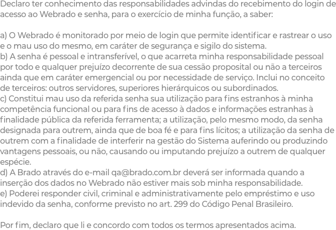

<div mat-dialog-title class="mat-typography">
  <div fxLayout="row"
       class="row-printer"
       fxLayoutAlign="start center">
    <mat-icon class="modal-termo-icon-printer">
      print_outline
    </mat-icon>
    <span class="mat-body-1">
      {{'admin-modulos.modal-termo.imprimir' | translate}}
    </span>
  </div>
</div>

<div mat-dialog-content
     class="modal-termo-content">

  <ngx-loading [show]="loading"></ngx-loading>

  
  
  
  

</div>

<div mat-dialog-actions>
  <div fxLayout="column"
       fxFill
       fxLayoutAlign="none center">

    <mat-checkbox class="modal-termo-checkbox"
                  [formControl]="termoAceito">
      {{'admin-modulos.modal-termo.checkbox-aceite' | translate}}
    </mat-checkbox>

    <div class="modal-termo-row-buttons">
      <button mat-raised-button
              (click)="onClickRecusarTermpo()"
              class="modal-termo-button"
              color="warn">
        <strong>
          {{'admin-modulos.modal-termo.botoes.rejeitar' | translate}}
        </strong>
      </button>

      <button mat-raised-button
              (click)="onClickAceitarTermpo()"
              [disabled]="!termoAceito.value"
              class="modal-termo-button button-aceitar">
        <strong>
          {{'admin-modulos.modal-termo.botoes.aceitar' | translate}}
        </strong>
      </button>
    </div>
  </div>
</div>
